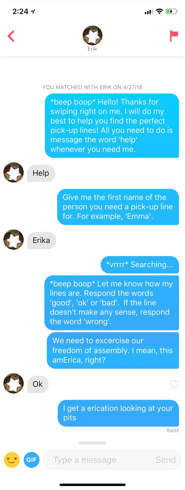

Pick-Up Lines Generator Bot on Tinder
Short Version:
Say you’re on a popular dating app, but you’re having trouble coming up with creative ways to introduce yourself.
We present to you the Pick-Up Lines Generator (PULG)! Simply match with his account and message him the name of that special person you’re trying to impress. PULG will scour the internet and search his database then give you a customized (pun of name, interests etc) pick-up line for your lucky love interest.
Technologies Involved: Python, Web-scraping, Facebook API
Long Version:
The Pick-Up Lines Generator (PULG) bot was a fun project that I did with three other friends as a final project for a Software Design class.
The bot does a few things:
- Gets messages from users through the Tinder chat
- Scrapes Reddit for pick up lines
- Generates its own pickup lines (ie anagrams of names)
- Receives user feedback and records the popularity of each pickupline
The bot connects to Tinder through manipulating the app’s browser application with Python through Facebook.
Pick-up lines were scraped using PRAW (Python Reddit API Wrapper).
Here's a conversation between my friend Erik and the bot:
If you found this project entertaining, check out this demo video we made!